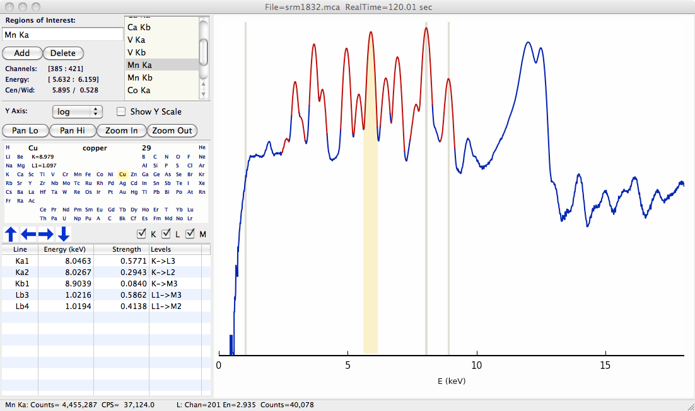

| Larch: X-ray Data Analysis |
X-ray Fluorescence Data can be manipulated and displayed with Larch.
read a GSECARS MCA spectra file, returning a Group
| Parameters: | filename – name of GSECARS MCA file |
|---|
The returned Group has the following components:
component name description filename name of file mcas list of MCA objects for each MCA saved in the file rois list of ROIs environ list of Environmental Variables energy array of energy values counts array of counts, deadtime corrected and summed over MCAs raw array of counts, summed over MCAs, not corrected. calib dictionary of calibration values dt_factor deadtime correction factor real_time real time for data acquisition live_time live time for data acquisition nchans number of energy points in spectra get_roi_counts() function to get counts for a named ROI save_mcafile() function to save MCA to file
create an interactive window for displaying an X-ray Fluorescence spectra
| Parameters: |
|
|---|
An example plot is shown below
Figure 1: Example XRF Display, showing X-ray Fluorescence spectra, defined ROIs (in red), and Periodic Table for showing predicted emission lines.
{kind=link}